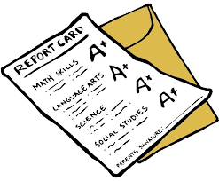

Jace Sikora
Jace Sikora is a student at Lane Tech High School, where he competes on the cross-country and track teams. He is also a member of the varsity chess team and enjoys swimming at a local park. Jace is dedicated to his athletic and intellectual pursuits, balancing his time between sports and academics.
Achievements
Sports
This page highlights Jace's sports achievements, showcasing their success in cross country at Lane Tech.
Learn More!
Academics
This page highlights Jace Sikora's academic achievements, showing dedication and dilgence in his studies.
Learn More!
Chess
This page highlights Jace Sikora's achievements on the Lane Tech Chess Team, showcasing his skill and dedication in competitive play.
Learn More!
Web Dev
This page showcases three of Jace Sikora's web development projects, highlighting his progression from beginner to more advanced skills.
Learn More!